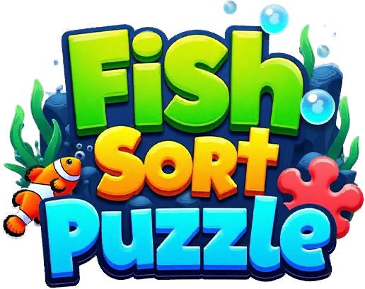

Fish Sort Puzzle – Game Design Document
Tài liệu thiết kế đọc ngược từ client Fish Sort Puzzle v1.4111 (Android, LDPlayer 09/2026): mọi tính năng, use case, cấu hình và bảng phần thưởng mà client chứa. Mỗi trang có infobox, mô tả, cách hoạt động, bảng thưởng, số liệu, use case chi tiết và cấu hình – kèm tên class/method làm bằng chứng.
26 trang tính năng99 use case141 dòng cấu hình1 sự kiện36 ảnh chụp1.859 level
Danh mục
🎯
Lõi gameplay
Cơ chế chơi lõi, vật cản, luồng màn chơi.
5 trang
💰
Kinh tế & Shop
Tiền tệ, booster, shop/IAP và các loại offer.
3 trang
🏰
Tiến trình
Tiến trình, độ khó, phần thưởng theo ngày.
3 trang
🎪
Sự kiện
Sự kiện live-ops, pass, bộ sưu tập.
1 trang
👥
Xã hội
Đội, bạn bè, bảng xếp hạng, hồ sơ, mời bạn.
2 trang
📡
Live-ops & hạ tầng
Cấu hình từ xa, AB test, thông báo, analytics.
3 trang
⚙️
Meta & UI
Màn hình chính, cài đặt, onboarding, tài khoản.
9 trang
Phụ lục
🗓️🔓🎁💳🧩🧾🔤ℹ️
Tổng quan sự kiện
Hai sự kiện đua, tham số server và trạng thái bật tắt thật.
Level mở khóa
Các mốc UnlockLevel đọc được từ hằng số trong client.
Mã phần thưởng
8 mã vật phẩm dùng trong RewardStr, kèm icon thật của game.
Sản phẩm IAP
13 product id đọc từ logcat; giá do Google Play trả về lúc chạy.
Level & thống kê
1.859 dòng cấu hình màn, thời gian, độ khó và mật độ quảng cáo.
Config mặc định
12 bảng config gốc đóng kèm APK, nguồn dữ liệu thiết kế chính.
Text UI (EN)
698 khoá dịch × 14 ngôn ngữ, khoá tra cứu là chuỗi tiếng Trung.
Về tài liệu này
Nguồn dữ liệu, độ tin cậy, giới hạn do obfuscation, cách cập nhật.